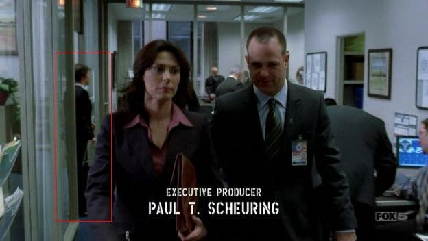
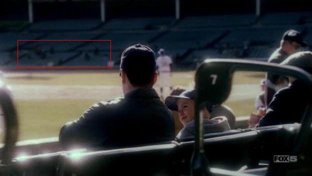
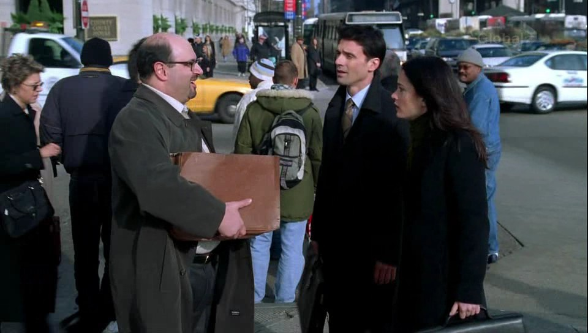
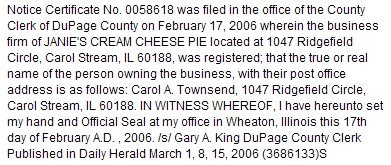

Thunder Over Louisville
Greetings All, Carol and I visited Louisville, KY over the weekend for the annual Thunder Over Louisville show. Every year, the weekend before the Kentucky Derby, they conduct a huge airshow and the largest fireworks…
Previously, on Prison Break...
Good Monday, all! Episode 18 aired tonight, and although Carol did not appear in any scenes in this episode, she was very prominently featured reprising her role of Agent Betsy Ross in the opening "Previously, on Prison…
1 comment
Agent Betsy Ross
Prison Break, episode 17, April 10: Agent Betsy Ross (the name that was on Carol's badge for this scene), must be the hardest working agent in the service! In the scene at the Secret Service Office with Kellerman and…
1 comment
Prison Break Trifecta
Episode 16 aired tonight, and Carol was featured in an amazing three scenes! At 1:43 into the episode (widescreen version), you can catch Carol laughing just at the left edge of the screen as the waitress brings drinks…
You, too, can be in Prison Break
Live in the Chicago area? Have lots of free time? Wanna go to Prison? You, too, could have the quality (or quantity) screen time that Carol has been enjoying, by signing up to be an extra on Prison Break. Here is the…
I scream, you scream...
... Carol handed out Ice Cream! March 30, Carol was at the Oakbrook Marriott Resort, where she was handing out free samples of Dreyer's Skinny Cow Ice Cream at the "Creating Keepsakes University" scrapbooking event.…
2 comments
Prison Break Update - Episode 15
Episode 15 aired yesterday, which had two potential appearances. Alas, Carol was visible in neither of them. In the Wrigley Field scene, Carol was somewhere in the crowd of people crossing the street, as well as one of…

Prison Break Update - Episode 14
You may have spotted Carol in Monday's Prison Break (3/21, episode 14, 15:35 into the episode), if you get FOX in HD (16:9 Wide-screen-- I do not think she was visible in the standard 4:3 version). In this scene where…

Janie's Cream Cheese Pie
After taking a small business class last year, Carol began to form a plan for selling Cheesecakes (or cheese pies) using her mother (Janie)'s recipe. After having tested and perfected the process (using many friends and…
Prison Break Returns 3/20/06
There have been no new episodes of Prison Break broadcast since 11/28/05, but in that time they have been filming the remaining season's episodes in the Chicago area. Carol has been very busy shooting many scenes in the…